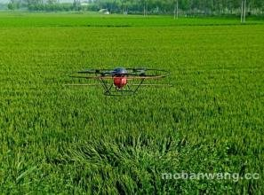

我们见过无人机用于农业生产，喷洒农药，大大提高工作效率。如今无人机在稻田上空飞一飞、拍一拍，加上强大的影像数据分析，就能很快测算出这块地的面积、产量等一系列数据。目前，各地都在开展第三次全国农业普查，摸清我国的粮食“家底”。
据国家统计局湖南调查总队副总队长欧阳美嫔介绍，本次普查运用卫星遥感、无人机航拍、人工实地PDA（手持智能数据采集终端）野外调查的“天、空、地”一体化数据采集方式，不仅可以减少人为因素干扰，也可全面提升调查的工作效率、数据质量和服务水平。
“以前测量种地面积都是依靠人力，而现在三位一体的遥感测量，大大节省了劳动力。”欧阳美嫔说。
按照国务院农普办的要求，湖南省农作物面积遥感测量种类为水稻(含早、中、晚），玉米和棉花。将对74个县、1315个行政村、6575个样本地块进行一类精细化测量。其中，每个县抽取15-20个行政村，每个行政村抽取5个样本地块，每个样本面积达60亩，在作物生长期内进行4次测量，最后经过推算，取得全省农作物总面积和总产量的数据。
用于农业统计这是无人机的新功能，随着无人机技术的提高，和人们对无人机认知的提高，将会越来越普及。